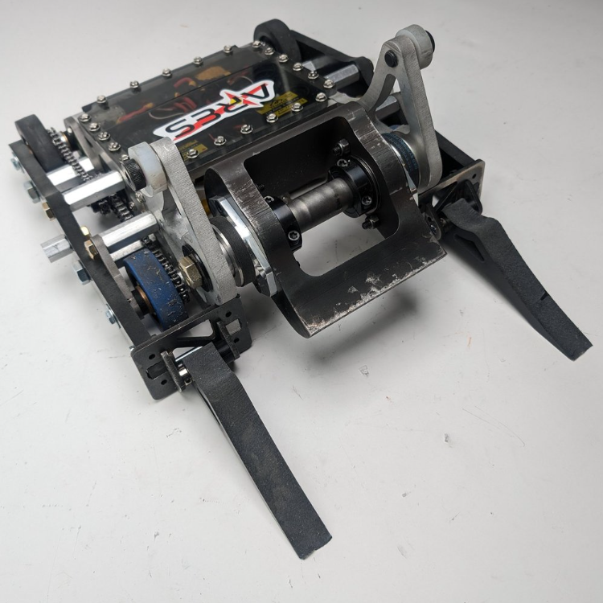
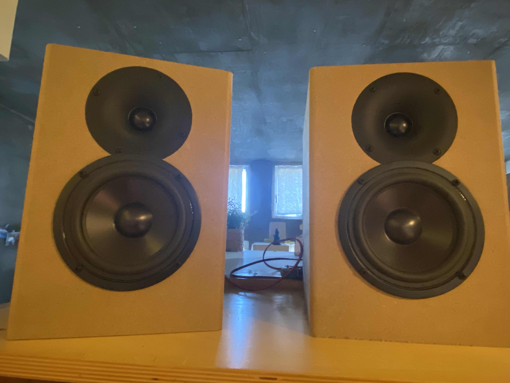
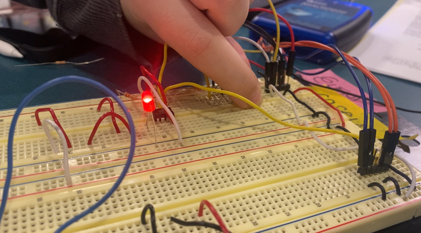
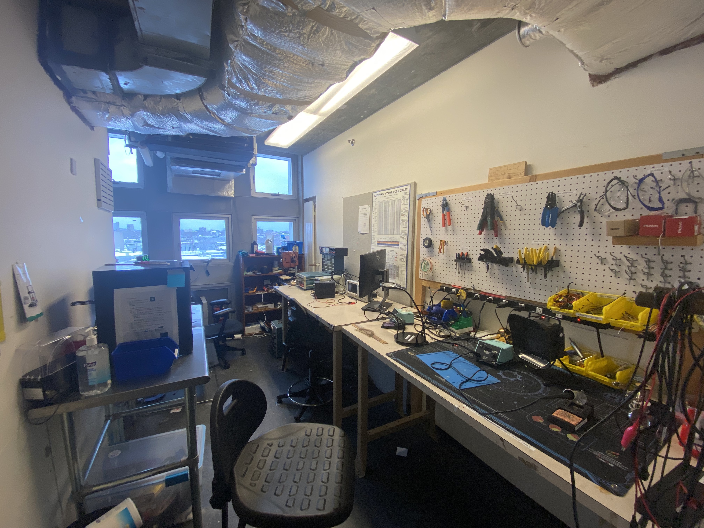

ARES Combat Robot
Joining the MIT combat robotics team offers a holistic approach to explore the engineering design process. Adapting my Fusion 360 skills from Science Olympiad events in high school to Onshape for modeling countless multi-planar parts has been an invigorating adventure. A more dynamic project, like a combat robot, forced me to rethink my conceptions of CAD and shoot for the stars; I discovered the power of assemblies to visualize part interactions and in-context modeling. Prototyping and machining allowed me to employ the techniques I developed from spending countless hours in the MIT makerspaces. One standout experience was when I lathed the weapon shaft for our team’s 30lb robot, ARES, combining facing, turning, drilling, and threading techniques to prepare for the 2024 October NHRL competition, where we secured the “Golden Dumpster” recognition.
Stained Glass Lamp

At the MIT Makerspaces, I’ve been tackling projects that help me refine my machining skills. One of my favorites is a stained glass lamp that combined woodworking and stained glass making. Moving from the table saw to the drill press and then to the soldering iron was truly a thrilling experience! I am proud of the final product and aim to create more stained glass panels to display.
Welded Rose

Building on my welding experience, I designed and crafted a rose as a Christmas gift for my mom. I’ve decided to make this a tradition—each time I visit home for the holidays, I’ll bring her a new welded flower. By the time I graduate, she’ll have a full bouquet! This project also introduced me to the CNC plasma cutter, which I used to shape the petals and leaves before welding them together. Unfortunately, TSA confiscated the rose during my flight home, but I’m already working on a new one, now with the benefit of experience from my first design. Stay tuned for more flowers!
Welded Flower Lamp

Over four weeks, I designed and welded my own lamp, blending engineering with artistry. Inspired by my love for florals, I took a sculptural approach, experimenting with a variety of makerspace tools to bring my vision to life. An exciting part of this process involved learning how to use a handheld plasma cutter, which allowed me to shape each piece with an organic and personal touch. I have discovered a deep passion for welding and am eager to take on more projects!
Speakers
In my Physics of Energy seminar, I had the opportunity to assemble the circutry for a speaker system. I soldered the various components to a PCB and used power tools to assemble the rest of the speaker. I am proud of the final product and aim to continue to refine my skills in the future!
Temperature Sensitive LED Circuit
In my electronics class, I created a temperature sensitive LED circuit. Working with Op-Amps and Thermistors, when temperature changes were introduced to the environment, the brightness of the LED changed. I am beginning my journey with electronics and am eager to continue!
Simmons Hall Electrical Engineering Lab Chair
In my effort to work with electronics more, I ran for EE Lab Chair of my residence hall! My responsibilities include upkeeping the lab, maintaining the equipment, and training other students. This hands-on role excites me and I hope to learn more about electronics in the process!